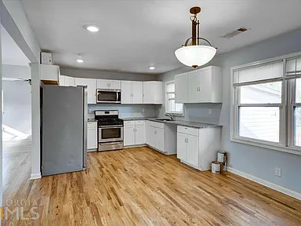
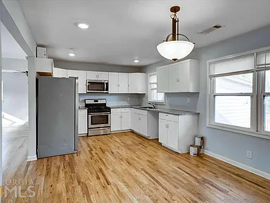

Step into the past with this charming 1959 house, complete with open parking for up to 4
cars and a sprawling backyard. The vintage design provides a unique and nostalgic feel,
perfect for those seeking a touch of character in their home. The open parking area offers
plenty of space for multiple vehicles, making it convenient for you and your guests. The
huge backyard provides endless opportunities for outdoor activities and gatherings, with
plenty of room for gardening, relaxing, and entertaining. Whether you're looking for a
place to call home or a potential investment property, this 1959 house offers a one-of-a-
kind opportunity to own a piece of history.